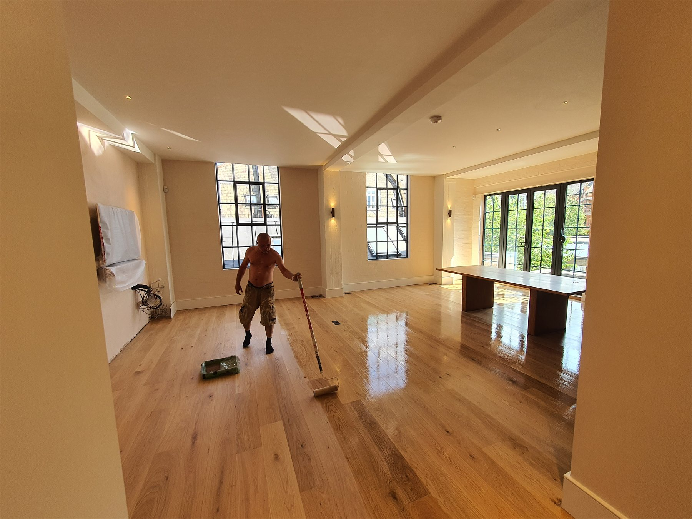

Renovation, finishing & handyman work
Private practical work around West London: surface preparation, painting preparation, snagging, finishing corrections, small repairs and exterior support.

Portfolio photos are selected from real work archive. Internal ranking numbers are not shown to clients.Services / Zakres prac
The first version of this page stays focused on visible property work: finishing, preparation, repairs, exterior support and practical problem solving.
Surface preparation
Preparation before painting, sanding, filling, cleaning and practical prep work.
Painting prep & finishing
Painting-related preparation, finishing details, corrections and snagging.
Small repairs / handyman
General practical repairs, fixes, improvements and help with property jobs.
Exterior support
Patio, driveway, garden/property support and other practical outside work.
Portfolio
Selected real work examples for clients. The technical archive may use internal IDs, but the public page is about the work: finish quality, process, exterior support and practical results.
Quote / Wycena
For a quick estimate, send a short description and photos. If the job needs inspection, I will say so clearly.
If the job is close to Isleworth, Brentford, Hounslow or nearby, I may be able to come and check it for free. The closer the job is, the easier it is to price fairly and arrange quickly. For jobs further away, send photos first and I will tell you honestly what makes sense.
What needs doing?
Where is the job? Area/postcode.
Send photos or short video.
When do you need it?
Any budget/priority?
I reply with next step or viewing.
About / O mnie
Long practical work background in construction, finishing and hands-on problem solving. The focus is simple: real work, clear communication and useful results.
Contact
Before publishing widely, replace the placeholder phone/email below with the real contact details you want clients to use.